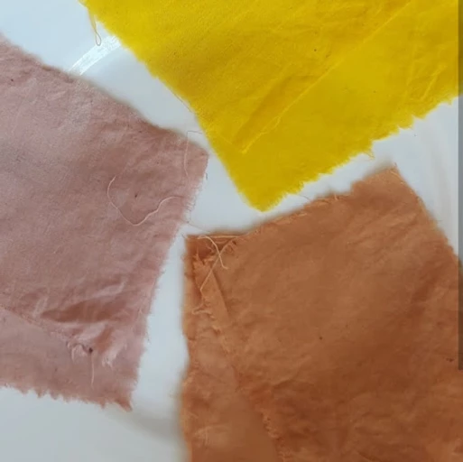
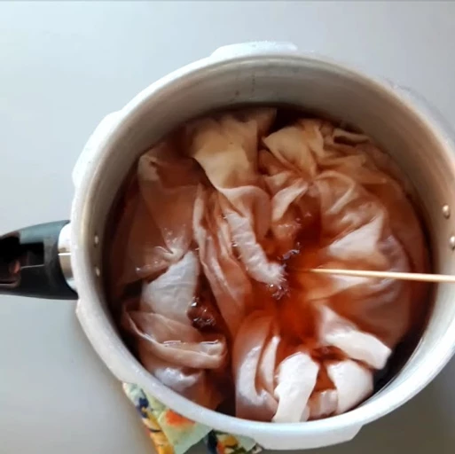
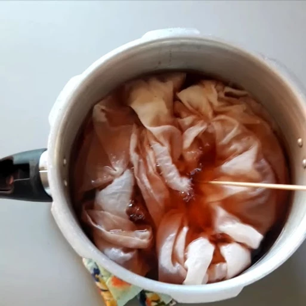
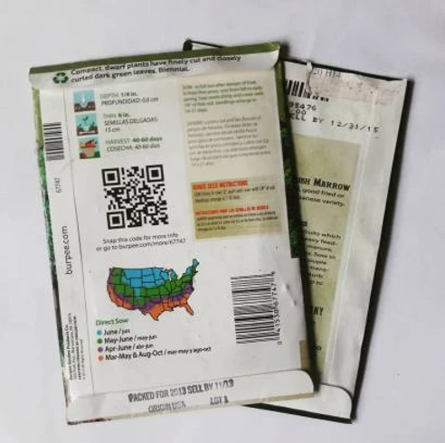
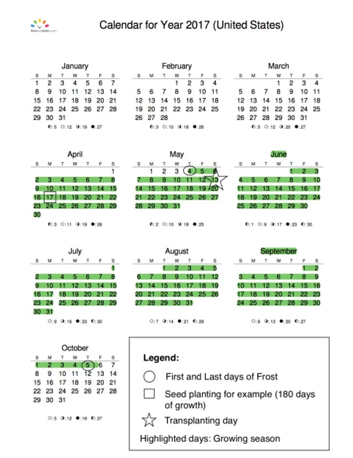
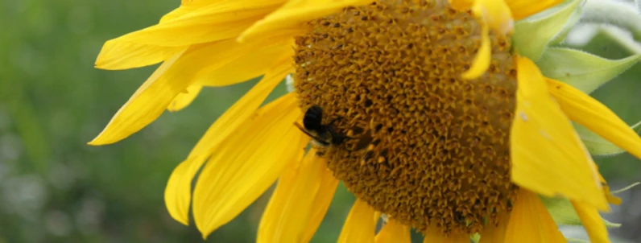
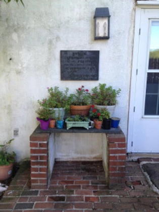
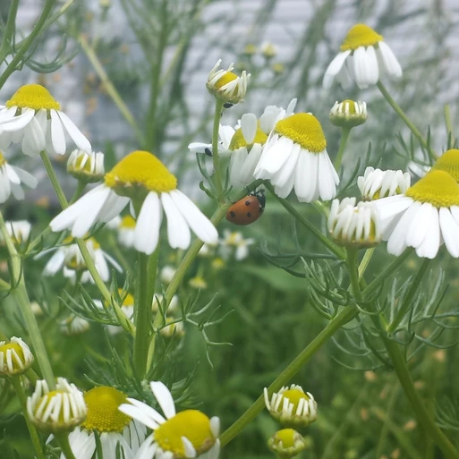

Since then, every time I visit this friend, I see saved up onion peels in a jar, avocado pits in the freezer, a dyed piece of cloth drying on the line and especially little kids proud of what their mama made for them! So much enthusiasm and so much love for what nature has to offer!
As promised on social media, this is a quick, yet detailed tutorial on how to dye fabric with natural dyes without the use of any additional chemical:

First, find a material to dye. You can use un-dyed fabric or yarn or even an old piece of clothing that need a fresh color. Keep in mind that if the fabric is already colored, the dye might not come up as described in this post. I began my project with a piece of un-dyed organic fabric to be used as a scarf.
Wash your fabric to get rid of any dust or unseen stains that might affect the dye.

Gather enough materials to make a dye bath. There is hundred of plants and many times that of colors you can make. Here's the ones I have experimented with and the resulting colors:

Avocado pits: dusty pink (about 2-3 pits)
Avocado peels: peachy pink (about 2-3 fruits's peels)
Orange onion peels: deep orange (peels from about a bag of onions)
Tumeric: bright yellow (about half a teaspoon)
Use an old aluminium pot that will only be used for dying if possible. Put your plant stuff in it and add water to cover the dye material as well as your fabric (do not add your fabric now. See step #4 )

Bring the water and plant material to boil, cover and let simmer 45 min-1 hour. Turn heat off and let stand. The longer you leave it, the more dye pigments will transfer to the water and then to your fabric. I like to leave mine until the water cools down a bit.
Add your fabric. You can either add the fabric as is or remove the plant parts first. Let the fabric soak from on hour to overnight. The longer you leave it, the more pigment it will absorb.

Rinse the fabric gently and let dry away from direct sunlight.
There you go! It was so easy to make! No chemicals, no headaches. By dying naturally, you avoid the harmful chemicals that gets added to your fabric, and add natural benefits from the plants you used.
My next dying project? Purple cabbage! I hear it makes a gray color..
Have you tried something different? Tell us about it!
Happy natural dying!
January 2018
Natural Dye
The first time I heard about Natural Dying was when I saw this adorable little girl wearing a beautiful dusty pink sweater and was told that the color was made with avocado. "Avocados make a pink color?!, I said, No way!"Since then, every time I visit this friend, I see saved up onion peels in a jar, avocado pits in the freezer, a dyed piece of cloth drying on the line and especially little kids proud of what their mama made for them! So much enthusiasm and so much love for what nature has to offer!
As promised on social media, this is a quick, yet detailed tutorial on how to dye fabric with natural dyes without the use of any additional chemical:
First, find a material to dye. You can use un-dyed fabric or yarn or even an old piece of clothing that need a fresh color. Keep in mind that if the fabric is already colored, the dye might not come up as described in this post. I began my project with a piece of un-dyed organic fabric to be used as a scarf.
Wash your fabric to get rid of any dust or unseen stains that might affect the dye.
Gather enough materials to make a dye bath. There is hundred of plants and many times that of colors you can make. Here's the ones I have experimented with and the resulting colors:
Avocado pits: dusty pink (about 2-3 pits)
Avocado peels: peachy pink (about 2-3 fruits's peels)
Orange onion peels: deep orange (peels from about a bag of onions)
Tumeric: bright yellow (about half a teaspoon)
Use an old aluminium pot that will only be used for dying if possible. Put your plant stuff in it and add water to cover the dye material as well as your fabric (do not add your fabric now. See step #4 )
Bring the water and plant material to boil, cover and let simmer 45 min-1 hour. Turn heat off and let stand. The longer you leave it, the more dye pigments will transfer to the water and then to your fabric. I like to leave mine until the water cools down a bit.
Add your fabric. You can either add the fabric as is or remove the plant parts first. Let the fabric soak from on hour to overnight. The longer you leave it, the more pigment it will absorb.

Rinse the fabric gently and let dry away from direct sunlight.
There you go! It was so easy to make! No chemicals, no headaches. By dying naturally, you avoid the harmful chemicals that gets added to your fabric, and add natural benefits from the plants you used.
My next dying project? Purple cabbage! I hear it makes a gray color..
Have you tried something different? Tell us about it!
Happy natural dying!
January 2018

#2 “Help! I kill every plant I touch!”
Let’s cover watering, grooming and fertilizing your plants..Watering
One question that I often get is “How much should I water my plants?” Unfortunately, there is no simple answer to that. It depends on the size of your plant, the size of your pot, it’s location in the house and how much air and sun it gets! But don’t worry, I’ll give you some guidelines.
Out in nature, the soil never completely dries up. We might think it is dry, but deep where the roots are, it is cool and moist and full of life! Smaller pots simply dry faster and need to be watered more often. So let’s try to replicate this at home. From experience and lots of trial and errors, I learned to water my indoor plants 2 or 3 times per week with small quantities of water (about half a cup for medium sized pots and about a cup for bigger pots). I also stay aware of changes in temperature and always look at the leaves and soil to know if I should water more or less each time.
Be very careful not to give it too much either. Overwatering can cause the roots to rot and your plant will suffer. Moist is the key word. How do you know if your plant’s roots are moist and comfortable? Easy! Go to your plant right now and with your finger, dig a small hole (½”) near the base of the plant. Is the soil darker and humid? Then it is moist! Do not let it dry so much as the soil separates from the pot. As Muhammed peace be upon him always reminded us, moderation!
Here’s some points to keep in mind:
Cacti and succulents need less water.
Tropical plants need humidity. Spraying their leaves with water additionally to watering makes them happy.
Flowering and fruiting plants also needs more water than non flowering plants.
Keep your plants in pots with good drainage (holes at the bottom). If you water too much, the water will be able to escape and not cause damage to the roots.
Water your plants with room temperature water. Cold water from the faucet can mimic winter season and your plants won’t grow much. No one likes cold showers!
Grooming
There isn’t much you can do to add to the beauty of Nature. But house plants can shed some leaves and it can look messy. Use clean and sharp scissors to gently cut out any dead leaves or parts. Your plants will look nicer and fresher this way. Remember to clean your tools with soap and let dry after grooming to avoid spreading insects or diseases.
Fertilizing
I personally don’t fertilize my plants with chemical fertilizers. Once or twice a year, if needed, I repot my plants and add new organic soil to the existent one. That brings new nutrients to the pot and that way, I don’t need to add man-made fertilizers that might create imbalance in the soil.
*Remember that stress can make a plant vulnerable to disease, so not enough water or nutrients can make it sick, being treated badly such as shaking or having leaves pulled out for no reason constantly, being left in a too cold or too warm environment, being left in a dark or too sunny environment, etc. Any time a plant is not happy, it could get sick or loose leaves. Our job is to make sure it is a happy as possible and our reward will be beautiful lush green plants insha’allah! Outdoors and in their natural environment, God makes sure that plants have all the light and water they need to grow and thrive. At home, it is our job to make sure that they have what they need. Learn where your plant comes from and you will learn more about how to care for it!
May your plants always be green!
Sumaya
July 2017

#1 “Help! I kill every plant I touch!”
Every time someone tell me “I don’t have a green thumb, all my plants die!” my heart sinks. Friends, it is not a magical gift that gardeners have, but a way of living you develop as you spend time with plants. If you can keep your kids, your pets, yourself alive, then plants are easy ones! Let me help you with that..Taking care of houseplants, or any plant for that matter, is not difficult. As long as you keep in mind a few important points, you should be able to have lush and happy plants to bring joy, and clean air to your living space.
Yes, plants can hear you!
Plants usually tell us when they are not happy, we just need to listen, and watch. Be open to your plants feelings. When you water it, don’t just pour water on it, be aware of the life that is growing. Talk to your plants the way you would talk to a adorable baby! My conversations with my plants go something like this: “Hello beautiful! You are resplendent today! Do you need anything? Are you happy here? It makes me so happy to see you healthy and growing!” Remember, give positivity and you’ll get positivity back!
Where is your plant originally from?
Knowing where your plant is originally from can help you understand it better and care for it in a more efficient way. For example, if you have a cactus, knowing that it is a desert plant can tell you that it shouldn’t need too much water, but loves bright sunlight. Or if your plant is an understory tropical one, high humidity and no sun is the way to go. There is a hundred different combinations to satisfy your green beauty, learn about your plants!
Location
Location is very important for indoor plants. The wrong place for a plant could mean too much sun, not enough light or even being too close to a vent which will dry the soil too quickly.
Plants require bright light or sunlight to undergo photosynthesis, which simply put is how they change carbon dioxide into oxygen. Keep in mind that even in a bright room, plants do not get as much light as they would if they were outside, so always place them in a brighter area than you think it might need.
North and East facing windows get soft light in the Northern Hemisphere, so they are a good place for most house plants. If you need a warmer microclimate or even sun, South and West facing windows get the most sunlight and heat. As a general rule, the only plants I put in direct sunlight are edible plants if they require it.
Come back next time for the rest of the article. We’ll be covering how much to water your plants and touch upon grooming and fertilizing. Until then, happy gardening!
Sumaya
June 2017

Is it a biennial/perennial/annual? Read more about the difference here.
Should you plant the seeds indoors or do they prefer direct sow outside? Some seedlings don’t like transplanting and could die during the process.
Can the seeds and seedlings handle some cold or should it only be planted after the frost date? Some seeds can sprout and survive some cold nights but some need heat to thrive.
How deep should it be planted? If you don’t find precise information about your seed, a rule of thumb is to plant the seeds 2 to 3 times the size of the seed deep, and only sprinkle the tiniest seeds over the soil, then water them lightly.
How many days does it need to germinate? This is only an indication to help you be patient Some seeds take 3-5 days like radish seeds, and some, like date seeds, may take up to 6 months!
Often, all these informations will be right there on the packet, sometimes, not. If some are missing, no worries. It is easy to find out more details once you have the name of the plant you are growing.
Remember: The last frost date is early May in Maryland/Eastern Pennsylvania. Look up the estimated last frost date for your specific area with this great tool!
Do you have any questions about reading seed packets? Let me know! I’ll be happy to help!
Sumaya
March 2017
Learn How To Read Your Seed Packets
So you went to the store and bought some packets full of seeds for amazing looking herbs and vegetables! How exciting! This is some of the informations to look for on the back of the packets:Is it a biennial/perennial/annual? Read more about the difference here.
Should you plant the seeds indoors or do they prefer direct sow outside? Some seedlings don’t like transplanting and could die during the process.
Can the seeds and seedlings handle some cold or should it only be planted after the frost date? Some seeds can sprout and survive some cold nights but some need heat to thrive.
How deep should it be planted? If you don’t find precise information about your seed, a rule of thumb is to plant the seeds 2 to 3 times the size of the seed deep, and only sprinkle the tiniest seeds over the soil, then water them lightly.
How many days does it need to germinate? This is only an indication to help you be patient Some seeds take 3-5 days like radish seeds, and some, like date seeds, may take up to 6 months!
Often, all these informations will be right there on the packet, sometimes, not. If some are missing, no worries. It is easy to find out more details once you have the name of the plant you are growing.
Remember: The last frost date is early May in Maryland/Eastern Pennsylvania. Look up the estimated last frost date for your specific area with this great tool!
Do you have any questions about reading seed packets? Let me know! I’ll be happy to help!
Sumaya
March 2017

In Pennsylvania and Maryland area, our local growing season goes aproximatively from May 4th through October 5th (154 days). It means that the last expected frost in the spring happens around May 4th, and the first hard frost in the fall happens around October 5th. This is how long you have to go from the day you can plant outside until the day you get your first killing frost and your plants have to be covered, or die.
Keep scrolling to learn how to plan your indoor planting with the use of a calendar…
Let’s say you want to grow a plant that is native to a warmer climate and needs a long growing season, unfortunately, in your area, you only have around 154 days from the day you plant your seed until the last day of harvest (See Calendar picture to help you visualize the calculation). In some cases, that is not enough time! If you know for example, that your plant needs 180 days from seed to harvest, you might decide to give your plants a head start by planting them indoors, then transplanting them outside when the weather is safe:
180 days – 154 days = 26 days.
Now you know that you need at least an extra 26 days for your plant to grow and have time to be harvested (preferably more) . But where do you find those days? Before the spring! You can plant your seeds indoors 26 days before your transplanting date.
First: Pick the date you want to transplant them outside. I usually pick a day 5-10 days after the last frost (to be safe).
Second: Count back the number of days you got with your calculation. In this example, 26 days.
Third: Plant your seeds indoors in pots and care for them. When the time comes, harden your seedlings then transplant them outside!
Come back next week for more on how to plant your seeds, their needs, and how to harden and move your seedlings outside.
Happy gardening!
Sumaya
March 2017
Indoor Planting
Indoor planting is when gardeners begin growing seeds in pots inside a house, a green house or hoops, to give them a growing head start before the spring.In Pennsylvania and Maryland area, our local growing season goes aproximatively from May 4th through October 5th (154 days). It means that the last expected frost in the spring happens around May 4th, and the first hard frost in the fall happens around October 5th. This is how long you have to go from the day you can plant outside until the day you get your first killing frost and your plants have to be covered, or die.
Keep scrolling to learn how to plan your indoor planting with the use of a calendar…
Let’s say you want to grow a plant that is native to a warmer climate and needs a long growing season, unfortunately, in your area, you only have around 154 days from the day you plant your seed until the last day of harvest (See Calendar picture to help you visualize the calculation). In some cases, that is not enough time! If you know for example, that your plant needs 180 days from seed to harvest, you might decide to give your plants a head start by planting them indoors, then transplanting them outside when the weather is safe:
180 days – 154 days = 26 days.
Now you know that you need at least an extra 26 days for your plant to grow and have time to be harvested (preferably more) . But where do you find those days? Before the spring! You can plant your seeds indoors 26 days before your transplanting date.
First: Pick the date you want to transplant them outside. I usually pick a day 5-10 days after the last frost (to be safe).
Second: Count back the number of days you got with your calculation. In this example, 26 days.
Third: Plant your seeds indoors in pots and care for them. When the time comes, harden your seedlings then transplant them outside!
Come back next week for more on how to plant your seeds, their needs, and how to harden and move your seedlings outside.
Happy gardening!
Sumaya
March 2017

The Importance of Native Plants
Native plants are plants that are indigenous to the geographical area they live in. They have been growing there for hundreds of years and have adapted to the local climate, soil types, and animals.Plants and animals that have evolved together depend on each other for survival. Native plants have developed their own natural defenses against local pests and diseases so it requires no pesticides. A famous example in North America is the Monarch butterfly and the milkweed plant. Milkweed produces a substance (alkaloids) that is toxic to many creatures. Monarch butterflies have evolved to have immunity to the toxins and by feeding on milkweed, it wards off bird predation. The relationship is so interconnected that Monarchs caterpillars can only feed on milkweed. No milkweed, no Monarchs.
Monarch butterfly feeding on milkweed flowers
Since native plants are so important, what can we do to protect them?
Protect native plants communities and minimize habitat destruction. The spread of farm lands is diminishing the amount of wild lands where many native plants grow, including milkweed plants. Additionally, corporate farming sprays the fields and surrounding areas copiously with pesticides and herbicides, which kills native insects and plants and creates the imbalance we are suffering from.
Landscape with native plants in yards, parks and campuses. Native plants are beautiful and needs less work as well as consume less water than other commercially sold plants.
Learn about native plants with books and guides. Stop at any used book or big chain bookstore for many fascinating and region-specific books about native plants!
Buy local nursery-grown natives: The more requested, the more will be available. Vote with your dollar!
Please do not remove natives from the wild. Teach children not to pick that pretty flower and only forage plants that are abundant in a specific area. Even better, buy the plant from your native nursery and plants it in your garden. That way, you’ll be able to use it anytime you wish, with no adverse effect!
Any questions about natives? Send me a message! As usual, we’ll see you next week with our next chapter about Indoor Planting!
Happy garden planning!!
Sumaya
March 2017

Plant hardiness and planting zones
Let’s say you are at the store buying seeds for your garden. The flowers you are interested in are supposed to grow well in UDSA 7b. What does it mean? Can you grow it at home? Will it be happy in your garden? Let’s see what that number means!According to the UDSA website, ‘plant hardiness is the standard by which gardeners and growers can determine which plants are most likely to thrive at a location’. For example, If you live in Washington DC, your zones are 7a/7b. In this case, it means you can easily plant those pretty flowers you wanted because their ideal climate and your local climate match.
USDA Plant Hardiness Zone Map
Look at the map above and find your local zone. If your plants grow easily in those zones, then you don’t have a problem. But what if your zones are different?
Well, if your plant’s ideal growing zones (ex: 5a) are a lesser number than the zone you live in (ex: 7b), then don’t worry. It just means that the plant can withstand colder and harsher climate than what you have! It might survive some frosts and in certain cases, live through the winter! That’s a good thing.
However, if the plant’s ideal growing zones (ex: 9b) are a higher number than the zone you live in (ex: 7b), then it means that you will need to put extra efforts protecting it. Higher zone number indicates that the plant should live in a warmer climate and might not withstand the low temperatures you get in your area. Many people decide to keep those warm weathered plants but have to protect them during the winter or bring them inside in pots when it gets cold.
Fun fact: Tomatoes are actually tropical plants. In their original zones where there is no frost, tomatoes are perennial. When we grow them in our areas with long winters, they live as annuals and die at the first sign of frost… unless you protect them in greenhouses.
Keep in mind that zone maps identification is not perfect. Microclimates can be affected by moisture, humidity, heat, and other conditions such as your garden being close to a wall, under the shade of a tree, in the path of the wind, etc. Make sure that wherever you decide to place your plants, they get enough light, enough water and are protected from harsh elements.
If you have questions, don’t hesitate to ask them!
Sumaya
March 2017

What’s the difference between ANNUALS, BIENNIALS, and PERENNIALS?
Other terms people often mix up are annuals, biennials and perennials. These terms can help you plan your long term gardens. So.. what’s the difference between them?Annuals

Annuals are plants that complete their entire life cycle from seed, to flower, to seed again within a single year. All roots, stems and leaves of the plant die at the end of the growing season. The dormant seeds are the only things that survive until next year and become the next generation. Example: sunflowers, tomatoes, peppers, etc.
Biennials

Biennials are plants that require two years to complete their life cycle. The first season, a small rosette of leaves grows near the soil surface and roots are formed. During the second season, a stem grows as well as flowers and seeds. At the end of the season, the entire plant dies. Example: carrots, mullein, onion, parsley, etc.
Perennials
Perennial plants usually lives more than a few years. Generally the top portion of the plant dies back each winter and regrows the following spring from the same root system. Native perennials are the most resistant to the area’s weather patterns. Example: Bee balm, asparagus, strawberries, rhubarb, milkweed, etc.
If you have questions, don’t hesitate to ask them!
Sumaya
March 2017

What’s the difference between Heirlooms, Hybrids, and GMOs?
I know it’s not easy. Everywhere you go, there are different brands, different certifications and different varieties. I will do my best to help you understand the difference between them all in the next few articles.What are GMO’s? GMO stands for genetically modified organisms.
They are created by adding genetic material from one species into the DNA sequence of another species. For example the DNA of flounder gene into a tomato to increase the fruit’s frost-tolerance. GMO cannot occur naturally.
GMOs are not allowed in certified organic production. Organic foods are GMO free!
GMOs threaten our soil, water, animals, insects and ecosystem.
A few years ago, there were sixteen (16) countries that had total or partial bans on GMOs. Now there are at least twenty-six, including Switzerland, Australia, Austria, China, India, France, Germany, Hungary, Luxembourg, Greece, Bulgaria, Poland, Italy, Mexico and Russia as well as 9 states in the USA who passed legislation to regulate, label, or ban GMOs (Vermont, Alaska, California, Connecticut, Hawaii, Washington, Maryland, Maine, Oregon, and more on the way!) Significant restrictions on GMOs exist in about 60 other countries.
Countries with laws to label GE foods
What are Heirlooms? Fruits or vegetables grown from seeds that have been handed down for generations in a particular region or area (50 years).
They are hand-selected by gardeners for a special trait such as resistant to cracking and disease. Usually greater flavor than that found in hybrids.
Heirloom vegetables are open-pollinated, which means insects or wind without human intervention pollinates them.
In addition, they tend to remain stable in their characteristics from one year to the next.
What are Hybrids? A hybrid is created when two members of the same species are cross-pollinated to produce an offspring containing the best traits of each of the parents. Pollen is moved between them by plant breeders or by insects. Cross-pollination is a natural process that occurs within members of the same plant species. Example: peas (Mendel’s experiments) and mules (offspring of a horse and a donkey).
The biggest disadvantage of hybrid seeds is that they don’t “reproduce true” in the second generation. When two dissimilar varieties are crossed, the result is a hybrid, which will often be bigger, brighter, faster growing or higher yielding than either of its parents, which makes for a great selling point. But it’s a one-hit wonder. The next generation don’t have the same vigor or uniformity, so you don’t usually save the seeds; you need to buy more next year.
It is important to understand that hybrid seeds are very different from those that are genetically modified. In short: Hybrid Seeds are nothing to fear, but you may not want to support them.
Now that you know the difference between GMOs, Heirlooms and Hybrids, you can decide for yourself what you feel comfortable growing in your garden and feeding your family. Personally, I try to grow Heirlooms first, and occasionally a hybrid if I find an interesting new variety. I stay away from GMOs to avoid contaminating my garden, and nature.
Come back later to learn the difference between Annuals, Biennials and Perennials!
Sumaya
Sources: http://www.gmwatch.org/files/10-reasons-we-dont-need-GM-foods.pdf http://responsibletechnology.org/gmo-education/faqs/ http://www.asyousow.org/our-work/environmental-health/gmos/
February 2017

An herb garden spotted in Allentown, PAAn herb garden spotted in Allentown, PA
DECEMBER:
What do I want to plant this coming year? Before you buy soil and seeds, you need to know exactly what do you want to grow. So here’s a small questionnaire for you to fill and ponder upon.
What do I usually buy from the grocery store? Because you want to plant what you and your family like.
Can I grow it in my zone? A banana plant won’t give fruits in Massachusetts, but there is plenty of native fruit trees / plants that grows where you live!
How much space do I have? A garden? A balcony? Only to give you an idea of how much space you have. For example, a cucumber plant might be too big for an indoor pot.
Do I want vegetables or flowers in my garden? Or both? Both are very beneficial for you and nature!
How much time do I want to spend on this project weekly? No matter the amount of time you have, you can grow something that suits your schedule!
These questions will help you pinpoint your goals this year. Next time, we will be talking about what seeds to buy and where to buy them from, stay tuned!

My front door garden on a rainy day.
Sumaya
December 2016
New Series: A Year of Gardening
2017 is knocking at the door, and this year, we are going to grow food together! In this series, I will be guiding you step by step on how to successfully plant a garden. Every month, I will post an article giving you all the information needed to care for your food garden for that season. And yes, this applies to you, who do not have a backyard, and you, who’s garden is in the shade, and you, who only has pots on a window sill or balcony, and you, who only have limited time. We can all do it, and we will!An herb garden spotted in Allentown, PAAn herb garden spotted in Allentown, PA
DECEMBER:
What do I want to plant this coming year? Before you buy soil and seeds, you need to know exactly what do you want to grow. So here’s a small questionnaire for you to fill and ponder upon.
What do I usually buy from the grocery store? Because you want to plant what you and your family like.
Can I grow it in my zone? A banana plant won’t give fruits in Massachusetts, but there is plenty of native fruit trees / plants that grows where you live!
How much space do I have? A garden? A balcony? Only to give you an idea of how much space you have. For example, a cucumber plant might be too big for an indoor pot.
Do I want vegetables or flowers in my garden? Or both? Both are very beneficial for you and nature!
How much time do I want to spend on this project weekly? No matter the amount of time you have, you can grow something that suits your schedule!
These questions will help you pinpoint your goals this year. Next time, we will be talking about what seeds to buy and where to buy them from, stay tuned!
My front door garden on a rainy day.
Sumaya
December 2016

First, pollination. To reproduce and make seeds, pollen needs to be transferred from the male anther of the flower to the female stigma by insects (and sometimes birds and bats). Without pollinators, either your plants won’t produce fruits and veggies, or you’ll have to painstakingly hand pollinate each and every flower in your garden. So if I want cucumbers or tomatoes, I need pollinators to pollinate my plants, and the best way to attract pollinating insects is to have flowers in your garden!
Another worthwhile reason to have insects around is to keep the insect population under control. “That doesn’t make sense!” you would say. In the animal kingdom, carnivorous animals hunt their preys, insects do that too! Lucky for us, most of the predators are “good bugs” that hunt “bad bugs”. Among many of those beneficial insects are ladybugs beetles, lacewings and hover flies larvae, pirate bugs, assassin bugs, parasitic wasps, spiders, and Tachinid Flies. They usually hunt insects that could cause damage to your plants, like aphids. Predatory insects are very important for your garden and the best way to have them work for you is to have a habitat for them where they can hide in and feed. That habitat is flowers.
If you are planning a garden or want to add to your existing one, some of the best flowering plants to grow are local perennials. They are the very first to bloom in the spring and they survive with the least amount of attention, which means less watering or artificial fertilizing. To make matter easier for us, predatory insects have evolved to look for these plants. Having flowers bloom at the first sign of spring signals for the bees and butterflies that they will have plentiful of food and habitat here, and that will guarantee regular visits from pollinators throughout summer and autumn.
Sumaya
June 2016
Of Flowers and Insects..
Flowers and insects are interconnected. Many want to grow beautiful flowers in their gardens but dread the insects that come with it. But those amazing insects play such a big part in the garden life that they are definitely worth it! Here are two main reasons you should not shy away from having flowers AND insects buzzing in your garden: pollination and insect control.First, pollination. To reproduce and make seeds, pollen needs to be transferred from the male anther of the flower to the female stigma by insects (and sometimes birds and bats). Without pollinators, either your plants won’t produce fruits and veggies, or you’ll have to painstakingly hand pollinate each and every flower in your garden. So if I want cucumbers or tomatoes, I need pollinators to pollinate my plants, and the best way to attract pollinating insects is to have flowers in your garden!
Another worthwhile reason to have insects around is to keep the insect population under control. “That doesn’t make sense!” you would say. In the animal kingdom, carnivorous animals hunt their preys, insects do that too! Lucky for us, most of the predators are “good bugs” that hunt “bad bugs”. Among many of those beneficial insects are ladybugs beetles, lacewings and hover flies larvae, pirate bugs, assassin bugs, parasitic wasps, spiders, and Tachinid Flies. They usually hunt insects that could cause damage to your plants, like aphids. Predatory insects are very important for your garden and the best way to have them work for you is to have a habitat for them where they can hide in and feed. That habitat is flowers.
If you are planning a garden or want to add to your existing one, some of the best flowering plants to grow are local perennials. They are the very first to bloom in the spring and they survive with the least amount of attention, which means less watering or artificial fertilizing. To make matter easier for us, predatory insects have evolved to look for these plants. Having flowers bloom at the first sign of spring signals for the bees and butterflies that they will have plentiful of food and habitat here, and that will guarantee regular visits from pollinators throughout summer and autumn.
Sumaya
June 2016

No Yard? No Problem! An Introduction to Container Gardening.
We don’t all have a big yard to devote to a food garden. So what can we do? Grow on your deck, grow on your balcony! Growing edibles can be done even in the smallest spaces.Many plants do very well in pots such as tomatoes, beans, eggplants, peppers, even potatoes! For greens you can plant lettuce, kale, spinach, collard greens, and root vegetables such as radishes, carrots and beets. And our favorites and less space consuming, herbs! You can easily grow parsley, oregano, rosemary, chives, and tea herbs like mints, sage, basil, lemon verbena, bee balm, etc.
As you can see, any plant that can fit in a pot, can be grown in a pot! Depending on what you are growing, you might need as little as one foot of soil to 3+ feet. For example, pepper plants can grow up to 3ft in height and 1-2ft wide, so make sure you have enough space for them to grow. If you have a corner of soil, install a trellis and plant climbing plants such as peas, cucumbers, zucchinis, grapes, hardy kiwi, etc. You can also use hanging baskets. Go vertical!
To prove how easy it is for a beginner to plant a first time garden, we made an experiment. A few months ago, my dear husband got to work planning a garden for his elderly parents. Now you need to know that my husband knew nothing of gardening. He never took care of a plant, never had a garden. With a little bit of coaching, he was able to set up the edible garden on the deck. Let’s see how he did!


I’ll let the Hubby describe what he did: “Some of you have been asking for pics of my parents edible garden project. Here’s a clear shot of the edible garden we set up for my folks. They both have limited mobility, so having the garden in the backyard would’ve been challenging as its hard for them to go up and down [the backyard and side yard] slopes. Instead, we built a raised garden bed on the deck. First we laid the tarp to protect the deck from water damage. Second, we assembled [raised] beds without any tools. […] we planted cilantro, eggplant, melons, beans, and lettuce […] tomatoes, onions, ginger […] peppers […] sunflowers and […] strawberries. Inside the house, we planted another seed tray of spinach and planted garlic bulbs."
My in-laws were delighted! As you can see, you don’t need to have experience or lots of knowledge to grow edible plants! Don’t be afraid to experiment. Yes you will make mistakes and yes some things might not be successful. But this is when you learn. Get yourself a notebook and note where you planted such and such plant, if it succeed or not and if you would change something for next year.. This is the best way to learn!
Now go outside, put a seed in the ground and happy gardening!
Sumaya
June 2016

Bismillah
“And We have sent down blessed rain from the sky and made grow thereby gardens and grain from the harvest.”
– Qur’an 50:9 –
“If the Resurrection were established upon one of you while he has in his hand a sapling, then let him plant it.”
– The Prophet Muhammad (peace be upon him) –
Assalam aleycum (May peace be upon you)
Thanks for stopping by! I am Sumaya, your Zone 6a/b Gardener. This corner of the web will contain information pertaining mainly to zone 6 and 7, more specifically the North-East region of the United States, as my home base is Pennsylvania.
God has made us Khalifa on earth, Stewards of the Earth. Which means He has entrusted us in keeping our beautiful planet healthy and abundant for the next generations. Beautiful, as in preserving it’s treasures of fauna and flora and only taking what we need. And abundant, as in making sure we keep our food’s DNA whole and nurishing for the future by saving and protecting the Seeds that were passed down to us. And what a better way to do all of that than to have a Garden. A Garden to increase wildlife, feed us and them, and give us food security for the next seasons.
This is all pretty and nice, but we often hear how some areas in this country have “food deserts” and how many people can’t afford to buy fresh vegetables, even less, organic produce. My dream would be for everyone to be allowed and able to grow their own Victory Gardens at home and be able to supply their diet with something fresh from their own yard or pots.
The intention of this blog is to provide information needed to grow a healthy, non-gmo, organic garden to feed yourself and your family, no matter the space you have or your financial situation. Join me on my experimental journey to learn about gardening, herbs, those unwanted garden weeds and nutrition. Let’s keep spreading knowledge, because a knowledge chain should never be cut! If I learn something, I’ll teach it to you, and I hope you will teach it to someone else..
With peace,
Sumaya
June 2016
Copyright Muslim Gardeners 2021 | Proudly created by Squirrel
Contant muslimgardeners@gmail.com
Facebook | Instagram